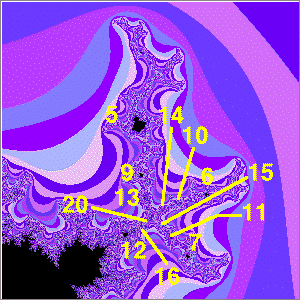

| 1. (b) Here is what we find. |
|  |
| Proceeding clockwse from the spoke attaching the antenna to the body of the Mandelbrot set, we find |
| The largest midget on the first branch has cardioid with cycle number 5. Going toward the point where the antenna spokes meet, we find 9 and 13. |
| The largest midget on the second branch has cardioid with cycle number 6. Going toward the point where the antenna spokes meet, we find 10 and 14. |
| The largest midget on the third branch has cardioid with cycle number 7. Going toward the point where the antenna spokes meet, we find 11 and 15. |
| The largest midget on the the branch attaching the antenna to the body of the Mandelbrot set has cardioid with cycle number 12. Going toward the point where the antenna spokes meet, we find 16 and 20. |
| Patterns |
|
|
|
Return to Exercises.